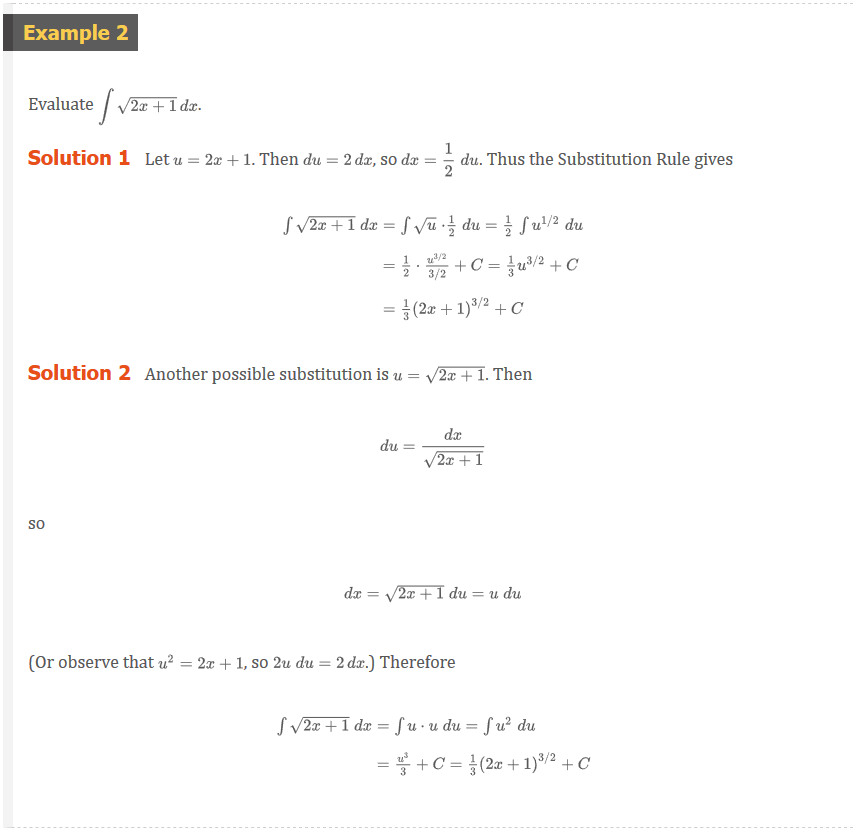
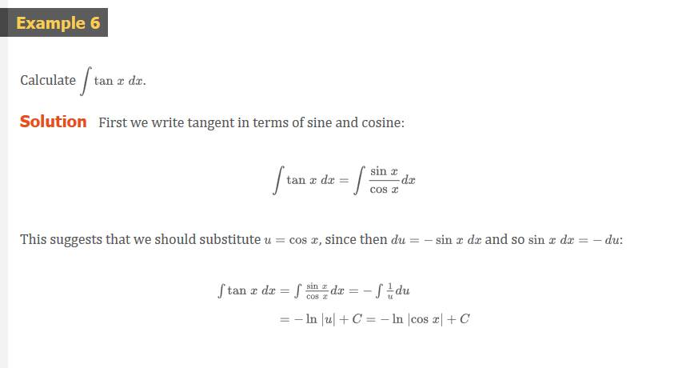
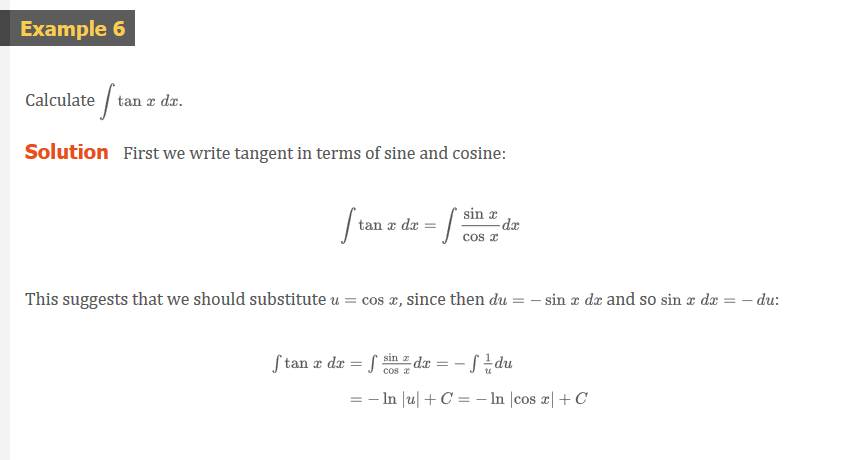
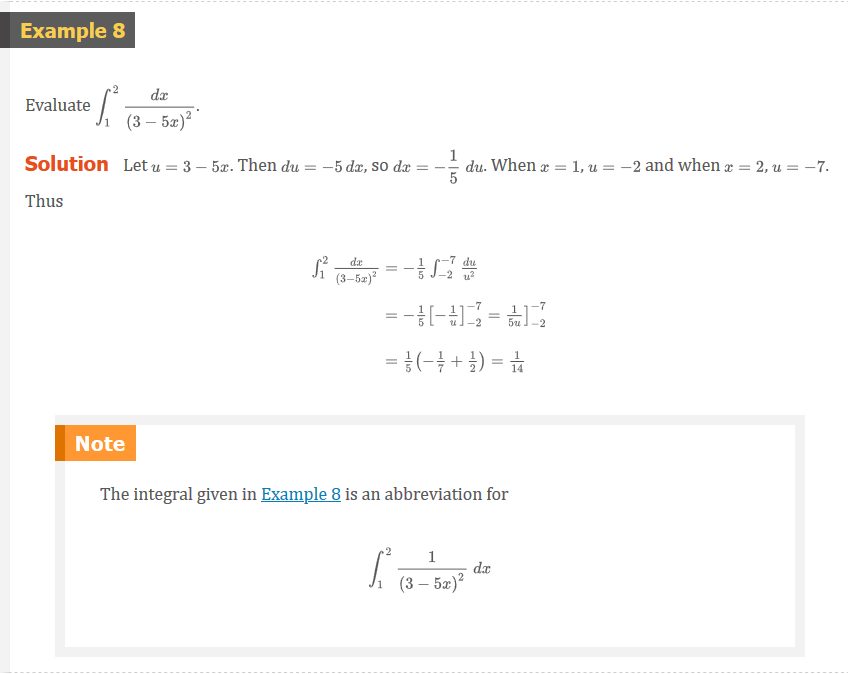
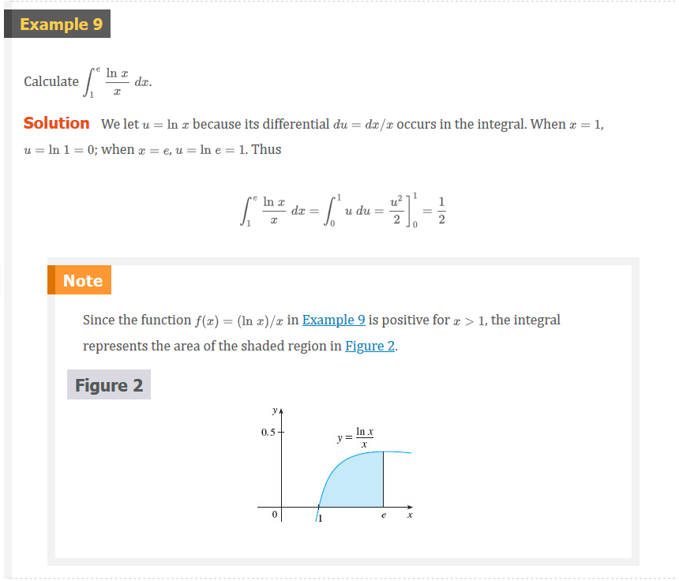
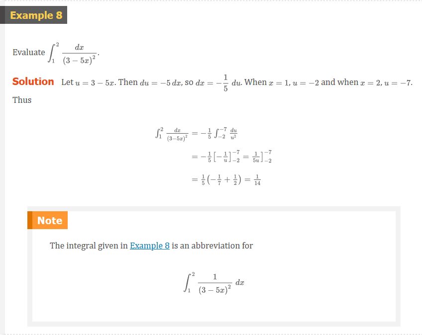
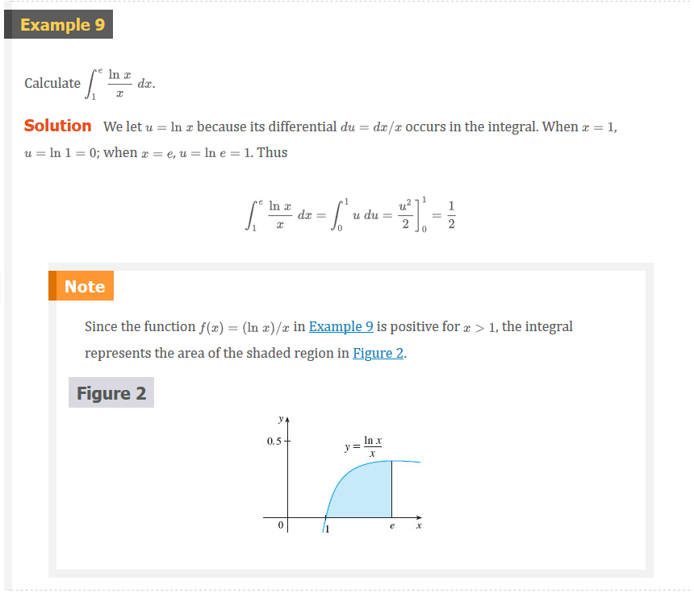
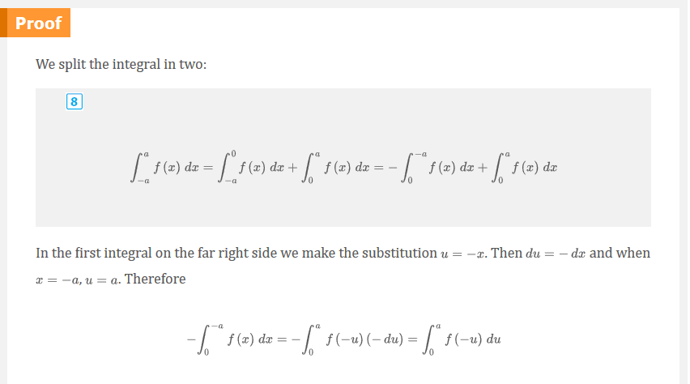
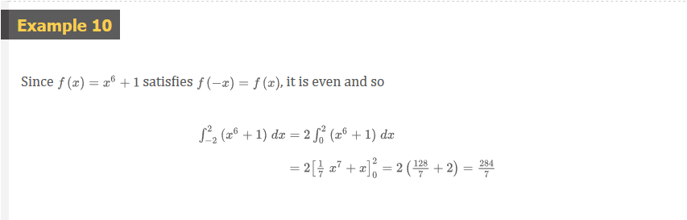
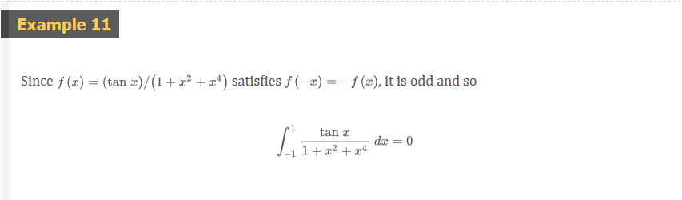

Chapter 5.5: The Substitution Rule
The Substitution Rule
Because of the Fundamental Theorem, it’s important to be able to find antiderivatives. But our antidifferentiation formulas don’t tell us how to evaluate integrals such as
Definition 1
\int 2x\sqrt{1 + x^{2}} dx
To find this integral we use the problem-solving strategy of introducing something extra. Here the “something extra” is a new variable; we change from the variable x to a new variable u. Suppose that we let u be the quantity under the root sign in (1), u = 1 + x^{2}. Then the differential of u is du= 2x\;dx. Notice that if the dx in the notation for an integral were to be interpreted as a differential, then the differential 2x\;dx would occur in (1) and so, formally, without justifying our calculation, we could write
Definition 2
\begin{aligned} \int 2x\sqrt{1 + x^{2}} dx &= \int \sqrt{1 + x^{2}} 2x\;dx = \int \sqrt{u} du \\ &= \frac{2}{3}u^{3/2} + C = \frac{2}{3}(1 + x^{2})^{3/2} + C \\ \end{aligned}
Note
Differentials were defined in Section 3.10. If u = f(x) then
du = f^{\prime}(x)dx
But now we can check that we have the correct answer by using the Chain Rule to differentiate the final function of Equation 2:
\frac{d}{dx}\left [ \frac{2}{3}(1 + x^{2})^{3/2} + C \right ] = \frac{2}{3} \cdot \frac{3}{2}(1 + x^{2})^{1/2} \cdot 2x = 2x\sqrt{1 + x^{2}}
In general, this method works whenever we have an integral that we can write in the form \int f(g(x))g^{\prime}(x)dx. Observe that if F^{\prime} = f, then
Definition 3
\int F^{\prime}(g(x))g^{\prime}dx = F(g(x)) + C
because, by the Chain Rule,
\frac{d}{dx}[F(g(x))] = F^{\prime}(g(x))g^{\prime}(x)
If we make the “change of variable” or “substitution” u = g(x), then from Equation 3 we have
\int F^{\prime}(g(x))g^{\prime}(x)dx = F(g(x)) + C = F(u) + C = \int F^{\prime}(u)du
or, writing F^{\prime} = f, we get
\int f(g(x))g^{\prime}(x)dx = \int f(u)du
Thus we have proved the following rule.
The Substitution Rule 4
If u = g(x) is a differentiable function whose range is an interval I and f is continuous I, then
\int f(g(x))g^{\prime}(x)dx = \int f(u)du
Notice that the Substitution Rule for integration was proved using the Chain Rule for differentiation. Notice also that if u = g(x), then du = g^{\prime}(x)dx, so a way to remember the Substitution Rule is to think of dx and du in (4) as differentials.
Thus the Substitution Rule says: It is permissible to operate with and after integral signs as if they were differentials.
The idea behind the Substitution Rule is to replace a relatively complicated integral by a simpler integral. This is accomplished by changing from the original variable x to a new variable u that is a function of x. Thus in Example 1 we replaced the integral \int x^{2}cos(x^{4} + 2)\;dx by the simpler integral \frac{1}{4}\int \cos(u)\;du.
The main challenge in using the Substitution Rule is to think of an appropriate substitution. You should try to choose u to be some function in the integrand whose differential also occurs (except for a constant factor). This was the case in Example 1. If that is not possible, try choosing u to be some complicated part of the integrand (perhaps the inner function in a composite function). Finding the right substitution is a bit of an art. It’s not unusual to guess wrong; if your first guess doesn’t work, try another substitution.
 


Note With some experience, you might be able to evaluate integrals like those in Examples 1, 2, 3, and 4 without going to the trouble of making an explicit substitution. By recognizing the pattern in Equation 3, where the integrand is the product of the derivative of an outer function and the derivative of the inner function, we could work Example 1 as follows:
\begin{aligned} \int x^{3}\cos(x^{4} + 2)\;dx &= \int \cos(x^{4} + 2) \cdot x^{3}\;dx \\ &= \frac{1}{4}\int \cos(x^{4} + 2) \cdot \frac{d}{dx}(x^{4} + 2)dx = \frac{1}{4}\sin(x^{4} + 2) + C \\ \end{aligned}
Similarly, the solution to Example 4 could be written like this:
\int e^{5x}\;dx = \frac{1}{5}\int 5e^{5x}\;dx = \frac{1}{5}\int \frac{d}{dx}(e^{5x})dx = \frac{1}{5}e^{5x} + C
The following example, however, is more complicated and so an explicit substitution is advisable.
 

Since -\ln(|\cos(x)|) = \ln(|\cos(x)|^{-1}) = \ln(1/\cos(x)|) = \ln(|\sec(x)|), the result of Example 6 can also be written as
Definition 5
\int \tan(x)\;dx = \ln|\sec(x)| + C
Definite Integrals
When evaluating a definite integral by substitution, two methods are possible. One method is to evaluate the indefinite integral first and then use the Fundamental Theorem. For instance, using the result of Example 2, we have
\begin{aligned} \int_{0}^{4} \sqrt{2x + 1}dx &= \left . \int \sqrt{2x + 1}dx \right ]_{0}^{4} \\ &= \left . \frac{1}{3}(2x + 1)^{3/2} \right ]_{0}^{4} = \frac{1}{3}(9)^{3/2} - \frac{1}{3}(1)^{3/2} \\ &= \frac{1}{3}(27 - 1) = \frac{26}{3} \\ \end{aligned}
Another method, which is usually preferable, is to change the limits of integration when the variable is changed.
The Substitution Rule for Definite Integrals
If g^{\prime} is continuous on [a, b] and f $is continuous on the range of u = g(x), then
\int_{a}^{b} f(g(x))g^{\prime}(x)\;dx = \int_{g(a)}^{g(b)} f(u)du
Note
This rule says that when using a substitution in a definite integral, we must put everything in terms of the new variable u, not only x and dx but also the limits of integration. The new limits of integration are the values of u that correspond to x = a and x = b.
Proof
Let F be an antiderivative of f. Then, by (3), F(g(x)) is an antiderivative of f(g(x))g^{\prime}(x), so by Part 2 of the Fundamental Theorem, we have
\left . \int_{a}^{b} f(g(x))g^{\prime}(x)\;dx = F(g(x)) \right ]_{a}^{b} = F(g(b)) - F(g(a))
But, applying FTC2 a second time, we also have
\left . \int_{g(a)}^{g(b)} f(u)\;du = F(u) \right ]_{g(a)}^{g(b)} = F(g(b)) - F(g(a))
  
 
Symmetry
The next theorem uses the Substitution Rule for Definite Integrals (6) to simplify the calculation of integrals of functions that possess symmetry properties.
Integrals of Symmetric Functions
Suppose f is continuous on [-a, a].
- If f is even [f(-x) = f(x)] then \int_{-a}^{a} f(x)dx = 2\int_{0}^{a} f(x)dx.
- If f is odd [f(-x) = -f(x)] then \int_{-a}^{a} f(x)dx = 0.
 
 
Video Lectures
- üì∫ u-substitution intro
- üì∫ u-substitution: multiplying by a constant
- üì∫ u-substitution: defining u
- üì∫ u-substitution: defining u (more examples)
- üìÑ u-substitution
- üì∫ u-substitution: rational function
- üì∫ u-substitution: logarithmic function
- üìÑ u-substitution warmup
- üì∫ u-substitution: definite integrals
- üìÑ u-substitution with definite integrals
- üì∫ u-substitution: definite integral of exponential function
Resources
- üì∫ u-substitution intro
- üì∫ u-substitution: multiplying by a constant
- üì∫ u-substitution: defining u
- üì∫ u-substitution: defining u (more examples)
- üìÑ u-substitution
- üì∫ u-substitution: rational function
- üì∫ u-substitution: logarithmic function
- üìÑ u-substitution warmup
- üì∫ u-substitution: definite integrals
- üìÑ u-substitution with definite integrals
- üì∫ u-substitution: definite integral of exponential function
Textbook